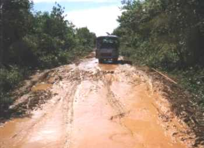
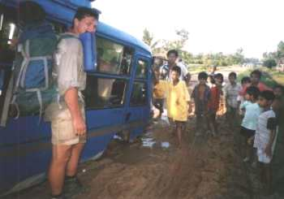
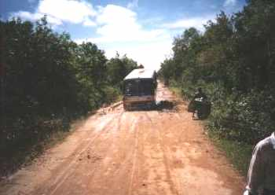
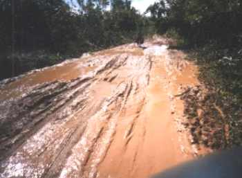

|  |
Er zitten voortdurend diepe kuilen in de weg. Als het nat is, dan neemt de bus eerst een soort aanloop om niet 'vast' te komen zitten. Door de grote schokken, stootten we soms onze hoofden tegen het dak van de bus, vooral Richard. |
|  |
Hier kwamen we dus vast te zitten. Het lijkt wel alsof dit de normaalste zaak van de wereld is, want men reageerde heel relaxed. De bus kan zichzelf m.b.v. een trekkabel uit de slib trekken. |
|  |
Ook als het droog is, rijdt de bus met een noodgang door alle gaten en geulen. De kotszakjes die in de bussen hangen, vinden gretig aftrek bij de locale bevolking. |
|  |
Terwijl we achterop een klein brommertje zaten met een nog kleinere bestuurder, reden we over dit soort wegen. |